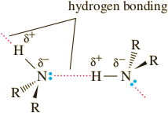

Amines Physical properties
Amines are polar compounds, and both primary and secondary amines form inter-molecular hydrogen bonds.
An N−H ⋅⋅⋅ N hydrogen bond is weaker than an O−H ⋅⋅⋅ O hydrogen bond because the difference in electronegativity between nitrogen and hydrogen (3.0 − 2.1 = 0.9) is less than that between oxygen and hydrogen (3.5 − 2.1 = 1.4). The effect of intermolecular hydrogen bonding can be illustrated by comparing the boiling points of methylamine and methanol. Both are polar molecules and interact in the pure liquid by hydrogen bonding. Because hydrogen bonding is stronger in methanol than in methylamine, methanol has the higher boiling point.
| CH3CH3 | CH3NH2 | CH3OH | |
|---|---|---|---|
| MW (g/mol) | 30.1 | 31.1 | 32.0 |
| bp (°C) | −88.6 | −6.3 | 65.0 |
All classes of amines form hydrogen bonds with water and are more soluble in water than hydrocarbons of comparable molecular weight. Most low-molecular-weight amines are completely soluble in water (Table 23.1). Higher molecular weight amines are only moderately soluble or are insoluble.
| Name | Structural Formula | mp (°C) | bp (°C) | Solubility in Water |
|---|---|---|---|---|
| Ammonia | NH3 | —78 | —33 | Very soluble |
| Primary Amines | ||||
| Methylamine | CH3NH2 | —95 | —6 | Very soluble |
| Ethylamine | CH3 CH2 NH2 | —81 | 17 | Slightly soluble |
| Propylamine | CH3CH2CH2NH2 | —83 | 48 | Very soluble |
| Isopropylamine | (CH3)2CHNH2 | —95 | 32 | Very soluble |
| Butylamine | CH3(CH2)3 NH2 | —49 | 78 | Very soluble |
| Benzylamine | C6H5CH2NH2 | — | 185 | Very soluble |
| Cyclohexylamine | C6H11NH2 | —17 | 135 | Slightly soluble |
| Secondary Amines | Dimethylamine | (CH3)2NH | —93 | 7 | Very soluble | Diethylamine | (CH3CH2)2NH | —48 | 56 | Very soluble | Tertiary Amines | Trimethylamine | (CH3CH2)3N | —117 | 3 | Very soluble | Triethylamine | (CH3)3N | —114 | 89 | Slightly soluble |
| Aromatic Amines | ||||
| Aniline | C6H5NH2 | —6 | 184 | Slightly soluble |
| Aromatic Heterocyclic Amines | ||||
| Pyridine | C5 H5N | —42 | 116 | Very soluble |